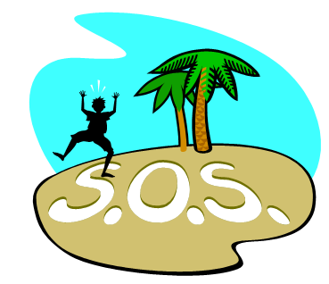
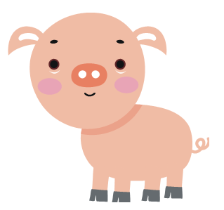
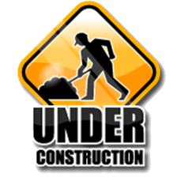

Individual Project
We will be spending the remainder of the semester working on an individual project. This project is designed to give you an experience building a larger program.
Overview
-
You can choose from one of the projects listed below. The projects are ordered from least difficult (first) to most difficult (last). However, the difficulty of all projects can be increased by having a more elaborate design.
-
You are encouraged to work with other students, but the work you hand in must be your own. You may use the Bootstrap CSS framework.
-
The project is due at the end of the semester .
-
This project will count 20% towards the final grade.
Stages
There are several stages to this project:
-
Read all the instructions.
-
Write a Proposal and submit it before you start.
-
Identify the steps that you will take to create your project.
-
Write and test the code. Use The Guide, which contains examples of the concepts we have learned in this class.
-
Write a Reflection.
-
Submit ALL your program files and your Reflection. You may need to create a ZIP to upload if you have many files.
Proposal
Before you start programming, you should submit a proposal and get feedback on what you plan to do for the project. Your proposal should briefly describe what your program is going to do to solve the particular problem you chose.
Reflection
You should submit a reflection document at the same time you submit your final program. Your reflection should include answers to the following questions. You can submit a Word document or a link to a Google document.
-
If you were to start over, what would you do differently? How can your solution be improved?
-
Would this program be a good starting point to solve other problems?
Rubric
This project will be assessed based on how well it accomplishes the following:
-
Your program solves the problem that was described.
-
You have included a way for the user to control what the program does (input). Your teachers can figure out how to operate your program without asking you for help.
-
You understand and can explain all the code you submitted. Your teachers may ask you to explain the code you submitted.
-
You chose the correct Javascript concept for each part of your program.
-
Your algorithms are easy to understand because you have broken down the problem into sub problems and have created functions for each sub problem. You wrote functions that can be used by different parts of the code instead of duplicating the same code.
-
You have used the appropriate data structures for each part of your program. For example, you used arrays for lists of things, objects for related things, etc.
-
Your program is easy to read because you have included Comments and have chosen good Names. Some of the projects include a ZIP download which contain Javascript data. You are not responsible for the naming used in these files.
-
Your program appears to function correctly. Your program is error free in Chrome after your teachers have tried to use it. This means you need to test the different cases. You may want to have another student try your program before handing it in.
-
You submitted a complete reflection.
Project Choices
Seattle Weather
Let the user explore the weather of Seattle.
-
You have been given daily weather information for Seattle since 2000.
-
Design a engaging way for a user to explore the weather information.
-
Your data includes: wind, snow, temperature and rainfall for each day.
-
You can download the data here: weather.zip
-
You can download the description of the data here: weather.pdf
New Car
Help the user pick which 2014 model year car to buy.
-
You have been given information about 2014 model year cars.
-
Design a useful way for a user to choose a car.
-
Your data includes: make, model, engine size, and fuel efficiency.
-
You can download the data here: cars.zip
Morse Code Translator
Translate English to Morse Code.
-
The user types English and your program shows them Morse Code.
-
Find out more about Morse Code here: http://en.wikipedia.org/wiki/Morse_code

Pig Latin Translator
Translate English to Pig Latin.
-
The user types English and your program shows them Pig Latin.
-
Find out more about Pig Latin here: http://en.wikipedia.org/wiki/Pig_Latin
-
Avehay unfay!

Mouse in a Maze
A mouse is trying to get out of a maze.
-
Your mouse should follow an algorithm that you design.
-
An animation should show the user the progress of the mouse.
-
The mouse and maze do not need to look like the picture.
-
You have to decide how the mouse is allowed to move.
-
You must detect when the mouse escapes.
-
You will not be graded on whether the mouse actually escapes.
Simulated Life
An algorithm for simulated life.
-
Write an animation of Conway's Game of Life. Find out more at http://en.wikipedia.org/wiki/Conway's_Game_of_Life.
-
You can decide what size of grid to use, and what pattern to start with (or let the user choose).

Design your own project
The most important thing is that you find a project that is interesting to you. Do the projects above not pique your interest? More interested in Music? Science? Art? Culture? Sports? Games? Space? Animals? Design your own!
-
Not sure if it is an appropriate project? You teacher can help.

If you want to work with a data set that you have found on the web, your teachers can help you get the data into a format that you can use in your project. Here are some example sources, but you can also find your own.
-
"The GHO data repository provides access to over 50 datasets on priority health topics including mortality and burden of diseases, the Millennium Development Goals (child nutrition, child health, maternal and reproductive health, immunization, HIV/AIDS, tuberculosis, malaria, neglected diseases, water and sanitation), non communicable diseases and risk factors, epidemic-prone diseases, health systems, environmental health, violence and injuries, equity among others. In addition, the GHO provides on-line access to WHO's annual summary of health-related data for its 194 Member states: the World Health Statistics 2012."" [Source: http://apps.who.int/gho/data/node.main]
-
"Our website is geared towards providing innovative statistical coverage and analysis of the NBA for team executives, coaches, fans, and the media." [Source: http://www.82games.com/newuser.htm]
-
"Our website is geared towards providing innovative statistical coverage and analysis of the NBA for team executives, coaches, fans, and the media." [Source: http://www.census.gov/2010census/data/]
-
"World Bank Open Data: free and open access to data about development in countries around the globe." [Source: http://data.worldbank.org/]
-
International Biogeography Society List of Databases
Biogeography, the study of the geography of life, has a long and distinguished history, and one interwoven with that of ecology and evolutionary biology. Traditionally viewed as the study of geographic distributions, modern biogeography now explores a great diversity of patterns in the geographic variation of nature — from physiological, morphological and genetic variation among individuals and populations to differences in the diversity and composition of biotas along geographic gradients. Given its interdisciplinary and integrative nature, biogeography is now broadly recognized as a unifying field that provides a holistic understanding of the relationships between the earth and its biota. Our abilities to develop more general theories of the diversity of life, and to conserve biological diversity may well rest on insights from the field of biogeography. [Source: http://www.biogeography.org/html/About%20IBS/about_ibs.html]
-
Pro Football Statistics.
-
Hockey Statistics.
-
Baseball Statistics.
-
Astronomy at the beginning of the 21st century, and particularly research arising from wide-field survey observatories at various wavebands, finds itself with serious challenges in statistical treatments of data to achieve its astrophysical goals. A vast range of statistical problems arise in the scientific interpretation of astronomical studies involving sampling, multivariate and survival analysis, image and spatial analysis, signal processing and time series analysis, nonlinear regression, and more. [Source: http://astrostatistics.psu.edu/]
-
National Oceanic and Atmospheric Administration (NOAA) Data Sets
The Science On a Sphere® Data Catalog is comprised of datasets from NOAA, NASA, universities, science centers and other organizations. The datasets are divided into the categories of Atmosphere, Ocean, Land, Astronomy, Models and Simulations, and Extras.
-
Rdatasets is a collection of 680 datasets that were originally distributed alongside the statistical software environment R and some of its add-on packages. The goal is to make these data more broadly accessible for teaching and statistical software development. [Source: http://vincentarelbundock.github.io/Rdatasets/]